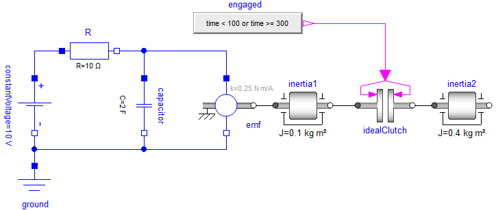

Overview
Mathematical Description
ModiaMath provides a simulation engine and other mathematical utilities to solve initial value problems of the following implicit index 1 DAE with events (containing an ODE or a semi-explicit index 1 DAE as special cases; $x(t), z(t)$ are real vectors):
where
is given. Note, that it is assumed that equations $f_d$ are linear in the derivatives $\dot{x}$. Equations $z=z(t)$ are zero-crossing functions. Whenever a $z_i(t)$ crosses zero, integration is halted, the DAE equations $f_d, f_c$ might be changed and afterwards integration is restarted. At an event instant some $f_c$ equations might become $f_d$ equations and vice versa. If the Jacobian $J$ is regular, the DAE has an index 1 (= by differentiating $f_c$ once, the system can be transformed to an ODE).
ModiaMath assumes that $J$ is regular for all time instants. If this condition is violated, initialization and simulation will usually fail and an error message of the form "Solver does not converge" might appear. Note, ModiaMath does not check this condition and can therefore not provide better diagnostics in such cases.
Initial conditions $x_{ev}^{-}$ must be provided before simulation can start ($x_{ev}^{-} = x_0^{-}$) or at an event restart. They need not to fulfill the constraint equations, so $f_c (x_{ev}^{-},t_{ev} )≠0$ is allowed. If this is the case, initialization/re-initialization will simulate for an infinitesimal small time instant so that $x_{ev}^{-}$ changes discontinuously to $x_{ev}^{+}$ with $f_c (x_{ev}^{+},t_{ev} )=0$. This is performed by analytically integrating over the initial time or the event time and might imply to integrate over Dirac impulses (in case $x$ is discontinuous at this time instant). Under certain conditions (for details see [3], section 4.2) a numerical approximation of the mathematical (exact) solution is computed, using the new method proposed in [3] (equation 8 in section 4.2).
As shown in [1], any DAE can be transformed to the form above with $f_d$ nonlinear in $\dot{x}$, at least in principal. In [2] algorithms are proposed to automatically transform a large class of DAEs to this form without solving algebraic equations and retaining the sparsity of the equations. This may require to analytically differentiating equations. The algorithms of this paper are implemented in the Julia package Modia which in turn uses ModiaMath. In Modia3D the transformation to this form is built into the package itself. Since all balance equations in physics and chemistry (such as energy balance, momentum balance) are linear in the highest derivatives, DAEs describing real world systems are linear in $\dot{x}$ and therefore this slight restriction is assumed and utilized by ModiaMath.
Note, DAE (1)-(3) could be further transformed to an ODE ($\dot{x} = f(x,t)$), but then the evaluation of function $f(x,t)$ might require to solve local linear and/or nonlinear equation systems. Furthermore, there are systems (for example ModiaMath/examples/Simulate_FreeBodyRotation.jl) where the ODE states $x$ would then need to be dynamically changed during simulation.
It is highly recommended to use Modia or Modia3D for simulating DAEs because this is much simpler and less error prone as when utilizing ModiaMath directly. However, ModiaMath can be also used without Modia or Modia3D. In this case, basically one Julia function with the following interface has to be provided (and in this function specific utility functions can be called)
getModelResidues(m::AbstractSimulationModel, t::Float64, x::Vector{Float64},
der_x::Vector{Float64}, r::Vector{Float64}where r is the vector of residues ($r = \left[ f_d; f_c \right]$). Given the simulation model m (= a mutable struct), the actual time instant t, the DAE variables x(t) and their derivatives der_x(t), the function has to compute the residue vector r(t). In directory ModiaMath/examples/withoutMacros_withoutVariables several examples are present that are based on this interface.
In order to simplify the definition of direct ModiaMath models (to evaluate and test ModiaMath functionality), the macro @component has been introduced. The examples in directory ModiaMath/examples/xxx.jl use this model definition. In directory ModiaMath/examples/withoutMacros/xxx.jl the same examples are present, however, the macro has been manually expanded (to show and test the result of the macro). The @component does not yet support events. If events are present in a model, the model has to be defined as shown in the examples of directory ModiaMath/examples/withoutMacros_withoutVariables.
K.E. Brenan, S.L. Campbell, and L.R. Petzold (1996): Numerical Solution of Initial Value Problems in Differential-Algebraic Equations. SIAM.
M. Otter, H. Elmqvist (2017): Transformation of Differential Algebraic Array Equations to Index One Form. 12th International Modelica Conference.
A. Benveniste, B. Caillaud, H. Elmqvist, J. Ghorbal, M. Otter, M. Pouzet (2019): Multi-Mode DAE Models - Challenges, Theory and Implementation. Computing and Software Science, LNCS 10000, Editors: B. Steffen and G. Woeginger, Springer.
Getting Started
You can just past the following code fragments into the Julia REPL.
To define a model
(note, it is simpler and less error prone to define a model with Modia or Modia3D):
using ModiaMath
using StaticArrays
@component Pendulum(;L=1.0, m=1.0, d=0.1, g=9.81) begin
phi = RealScalar(start=pi/2, unit="rad" , fixed=true, numericType=ModiaMath.XD_EXP)
w = RealScalar(start=0.0 , unit="rad/s" , fixed=true, integral=phi, numericType=ModiaMath.XD_EXP)
a = RealScalar( unit="rad/s^2", integral=w , numericType=ModiaMath.DER_XD_EXP)
r = RealSVector{2}( unit="m" , numericType=ModiaMath.WC)
end;
function ModiaMath.computeVariables!(p::Pendulum, sim::ModiaMath.SimulationState)
L = p.L; m = p.m; d = p.d; g = p.g; phi = p.phi.value; w = p.w.value
p.a.value = (-m*g*L*sin(phi) - d*w) / (m*L^2)
if ModiaMath.isStoreResult(sim)
p.r.value = @SVector [L*sin(phi), -L*cos(phi)]
end
end;
simulationModel = ModiaMath.SimulationModel(Pendulum(L=0.8, m=0.5, d=0.2), stopTime=5.0);
To simulate a model and plot results:
result = ModiaMath.simulate!(simulationModel; log=true);
ModiaMath.plot(result, [(:phi, :w) :a])This results in:

To run examples and tests:
# run examples
import ModiaMath
include("$(ModiaMath.path)/examples/Simulate_Pendulum.jl") # ODE as index-0 DAE
include("$(ModiaMath.path)/examples/Simulate_FreeBodyRotation.jl") # index-1 DAE
include("$(ModiaMath.path)/examples/withoutMacros_withoutVariables/Simulate_PendulumDAE.jl") # index-3 DAE
include("$(ModiaMath.path)/examples/withoutMacros_withoutVariables/Simulate_SimpleStateEvents.jl")
include("$(ModiaMath.path)/examples/withoutMacros_withoutVariables/Simulate_BouncingBall.jl")
# run all tests
include("$(ModiaMath.path)/test/runtests.jl")
To run a multi-mode example that has Dirac impulses
The following model from [3]
is defined by an ideal clutch described by two modes: Released (the clutch shafts rotate freely) and Engaged (the clutch shafts are rigidly fixed). If variable engaged = true, the clutch is in mode Engaged and otherwise in mode Released. An event occurs when Boolean variable engaged changes its value. If the clutch is in mode Released and changes to Engaged a Dirac impulse occurs (the clutch torque becomes infinite) and changes the clutch shaft speeds (inertia1.w, inertia2.w) in such a way that they coincide. Since inertia1.w is algebraically coupled to capacitor.v (the voltage over the capacitor) via the emf element, also capacitor.v changes discontinuously and der(capacitor.v) is a Dirac impulse. Mathematically, this means that the DAE index is changing depending on the clutch state and an $f_c$ equation is changed to an $f_d$ equation and vice versa.
This model can be simulated and the result plotted with command:
import ModiaMath
include("$(ModiaMath.path)/examples/withoutMacros_withoutVariables/Simulate_IdealClutch.jl")

The results of the simulation are shown in the figure above. The initial speed of inertia1 is w1 = 0 rad/s and w2 = 10 rad/s for inertia2. The capacitor is initially uncharged. The upper two partly overlapping curves are the angular velocities of inertia1 and inertia2. When the clutch is disengaged, the angular velocity of inertia2 is constant. The green curve shows the voltage over the capacitor. Since the clutch is engaged at initialization, Dirac impulses occur at time = 0 s. As a result, after initialization the angular velocities of the two inertias are identical. The common angular velocity at time = 0 s is 6.4 rad/s. The reason is that the capacitor acts in the same way as an additional moment of inertia to inertia1. The effective inertia is
Thus, the common angular velocity for the two inertias at time=0 s becomes
There are no Dirac impulses at time = 100 s when the clutch disengages, but again Dirac impulses at time = 300 s when the clutch engages again.
Package structure
The ModiaMath package is structured in the a set of sub-modules. The most important ones are:
ModiaMath.SimulationEngine
The engine to simulate implicit index 1 DAEs with events.
ModiaMath.DAE
Interface between the SimulationEngine and the index 1 DAE model (e.g. initialization and event iteration is performed here).
ModiaMath.Result
Theplotfunction of this module allows to plot the result data of the simulation engine by giving the signal names. With tuples and/or vectors/matrices of signal names, the window layout of the figures is defined. The legends/labels of the plots are automatically constructed by the signal names and their units.
ModiaMath.Variables
Provides Variable types to define properties of the variables on a higher level and copy automatically the interface vectors from the integrator into the variables and vice versa.
ModiaMath.Frames
Functions that generate and operate on frames, that is coordinate systems in 3D. The orientation of a frame is described either with a 3x3 rotation matrix or with a quaternion vector. This module is currently mainly used from Modia3D, but the functionality is useful for all 3D programs.